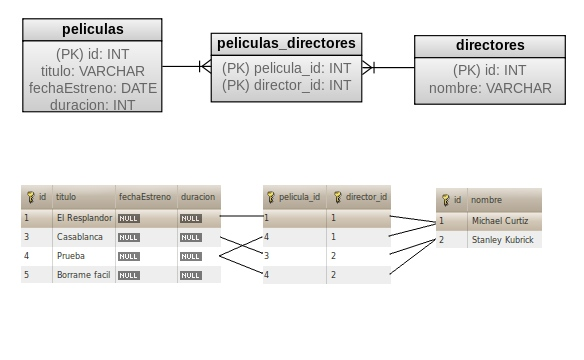

Ejercicios de Java Database Connectivity
Filmoteca en MySQL
Vamos a implementar una parte de la base de datos de la filmoteca de los anteriores ejercicios: la tabla de películas y la lista de directores de la película. Dejaremos para otro momento la tabla de actores. Cada película puede tener varios directores, y cada director puede haber dirigido varias películas. Esta es una relación "muchos a muchos" y lo normal es implementar este tipo de relacion con una tabla intermedia, al tratarse de un modelo relacional de base de datos.

En MySQL conviene utilizar el motor InnoDB en lugar del que se asigna por defecto a cada tabla, para permitir el uso de claves ajenas. En nuestro caso la tabla intermedia estará compuesta por dos columnas, ambas formando la clave principal (es decir, no se pueden repetir), y a la vez cada una de ellas tendrá una restricción de clave ajena a las tablas de películas y de directores, respectivamente. Esto significa que en la tabla intermedia no puede haber un valor que no esté asociado a un identificador existente en la tabla de películas o de directores. Nótese que estas restricciones imponen un orden a la hora de insertar en la base de datos, así como a la hora de borrar.
La base de datos descrita está incluida en las plantillas de la sesión, en la carpeta db/. Inclúyase esta carpeta en el proyecto, ya que contiene un script de ANT que conecta con la base de datos (en él hay que modificar la dirección, el nombre de usuario y la contraseña) y ejecuta el script filmoteca.sql que contiene las sentencias de creación de la base de datos. Si ésta ya existe, los datos son eliminados para introducir los datos de ejemplo de la figura. Ejecútese el script Ant para comprobar a través de algún cliente de MySQL que los datos se han creado con éxito.
Para que el proyecto cuente con las librerías del driver JDBC para MySQL, copiamos a su carpeta lib el conector proporcionado en las plantillas, mysql-connector-java-5.1.5-bin.jar y lo incluimos en el build path del proyecto.
Conectar con la base de de datos (0.5 puntos)
En las plantillas de la sesión está incluido un fichero fuente para usarlo como esqueleto para la implementación del DAO JDBC. Se pide implementar en el constructor la comprobación (en tiempo de ejecución) de que la clase com.mysql.jdbc.Driver existe y de lo contrario, capturar la excepción y relanzarla como nested, dentro de una nueva DAOException. Puede que haga falta alguna modificación en el resto del código fuera del DAO, para manejar la excepción.
Cambiar en el GestorDAO la creación del DAO, para que se haga uso del JDBCPeliculaDAO. Si ahora ejecutamos el programa, aunque los métodos del DAO todavía no estén implementados, el programa deberá fallar en tiempo de ejecución si no encuentra el Driver de MySQL.
En los tres métodos del DAO se pide establecer la conexión a la base de datos y después cerrarla. Dependiendo de la aplicación puede ser conveniente cerrar las conexiones cada vez que se terminen de usar, ya que los servidores admiten un número limitado de conexiones simultáneas. Sólo conviene mantenerlas abiertas si se sabe que se van a seguir utilizando. Se pide abrir las conexiones en la primera línea de los try de cada uno de los tres métodos del DAO. Hará falta la dirección de la base de datos, el usuario y la contraseña, todos ellos vienen como constantes en la clase. También se pide cerrar la conexión en los bloques finally de los métodos.
Consulta sin parámetros (0.5 puntos)
Para el método JDBCPeliculaDAO.getAllPeliculas() se pide crear una sentencia no preparada, Statement y ejecutar la query (viene como constante en la clase):
SELECT * FROM peliculas ORDER BY id;
A continuación en el bucle while de la plantilla, recoger los datos (id, titulo, duracion, fechaEstreno) del ResultSet mientras los haya, introduciéndolos en el objeto PeliculaTO y añadiendo el resultado a la lista de películas List<PeliculaTO> lista. La consulta de la lista de directores se hará en el apartado siguiente, de momento podemos ejecutar el programa y comprobar que listar las películas funciona.
Sentencias preparadas (0.5 puntos)
Las sentencias preparadas deben utilizarse cuando la consulta tiene parámetros para evitar que por error o malintencionadamente se inyecten sentencias no deseadas o simplemente ocurra algún error de SQL. En el apartado anterior se consultan todas las películas de la tabla peliculas pero no se carga la lista de directores correspondiente a la película. Lo podemos hacer mediante la siguiente sentencia SQL:
SELECT nombre FROM directores d, peliculas_directores pd WHERE (d.id = pd.director_id) AND pd.pelicula_id = ?;
donde el signo de interrogación "?" es un parámetro. Introdúzcase en una sentencia preparada la sentencia SQL (viene como constante en la plantilla) y el parámetro id de la película. El resultado deberá recorrerse e introducir los nombres de los directores en la lista de directores del objeto PeliculaTO. Con esto hemos completado el método getAllPeliculas() y pero la interfaz de usuario proporcionada por la clase Main no nos permite comprobar que funcione correctamente. Para comprobar que los directores se cargan correctamente se puede recurrir al debugger, al log, o a la salida estándar.
Sentencias de borrado de registros (0.5 puntos)
Los métodos delPelicula(int) y addPelicula(PeliculaTO) ya deberían contener el código de establecer y cerrar la conexión JDBC. Ahora se pide:
En delPelicula(int) preparar y ejecutar las sentencias:
DELETE FROM peliculas_directores WHERE pelicula_id = ?; DELETE FROM peliculas WHERE id = ?;
¿En qué orden deberían ejecutarse, dada la restricción de clave ajena que hay?
En la sentencia de borrado de películas se pide comprobar cuántos registros han sido afectados y si son cero, lanzar una DAOException.
Sin introducir transaccionalidad todavía, se pide comprobar que el borrado funciona ejecutando el programa.
Nótese que no eliminamos el director de la tabla de directores. En el supuesto de que hubiera más información asociada a cada director, dejarlos almacenados podría ser una estrategia adecuada. En caso de querer eliminarlos, la clave ajena de la tabla intermedia nos restringiría borrar un director que todavía esté referenciado por otras películas.
Sentencias de inserción de registros y valores autoincrementados (0.5 puntos)
En addPelicula(PeliculaTO) preparar y ejecutar la sentencia:
INSERT INTO peliculas(id,titulo,fechaEstreno,duracion) VALUES(?,?,?,?)
Si ha afectado a menos de un registro, lanzar una DAOException. Cerrar esta sentencia preparada y antes de continuar con el método, probar si funciona.
Para insertar la lista de directores en la base de datos habrá que utilizar varias veces las sentencias
SELECT id FROM directores WHERE nombre = ?; INSERT INTO directores(nombre) VALUES(?); INSERT INTO peliculas_directores(pelicula_id,director_id) VALUES(?,?);
Por tanto las prepararemos antes del bucle que recorre la lista de directores, y cada vez que las vayamos a utilizar limpiaremos sus parámetros con el método .clearParameters().
- La primera de ellas obtiene el identificador del director.
- La segunda se ejecutará sólo si el director no existía. Nótese que la tabla de directores tiene dos columnas pero sólo insertamos el nombre. El identificador de esta tabla está marcado como autoincremental y será generado. Necesitamos obtener el valor del id generado con el método .getGeneratedKeys(), como está hecho en el código de la plantilla.
- Finalmente con la id obtenida de una de las dos sentencias anteriores, se ejecuta la tercera sentencia que inserta en la tabla intermedia la asociación entre identificador de película e identificador de director.
Una vez finalizado el bucle se pueden cerrar las sentencias preparadas. Se pide completar el código de la plantilla y, sin introducir transaccionalidad, probar que funciona.
Transacciones (0.5 puntos)
Las transacciones no serían necesarias en el ejemplo anterior puesto que la lógica del programa ya se encarga de mantener la coherencia entre tablas. La transaccionalidad suele ser necesaria en bases de datos en las que varios clientes modifican las tablas de la base de datos y no se debe permitir que un insertado funcione con una tabla pero no funcione con la siguiente. En este caso se deshace la operación entera.
Para los métodos delPelicula(int) y addPelicula(PeliculaTO) se pide:
- Una vez establecida la conexión, desactivarle el autocommit.
- Una vez finalizado el borrado / inserción, respectivamente, forzar el .commit().
- Si algo falla, en el bloque catch deshacer la transacción con .rollback() y lanzar la excepcion DAOException.